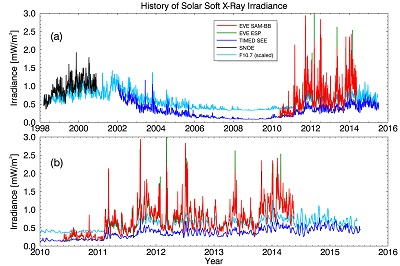
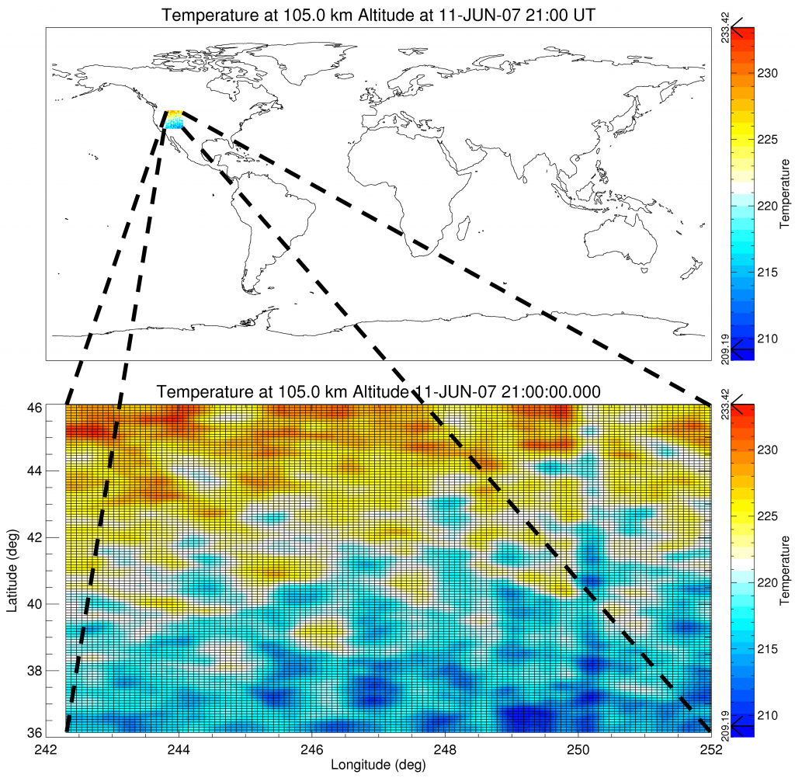
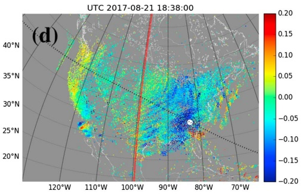
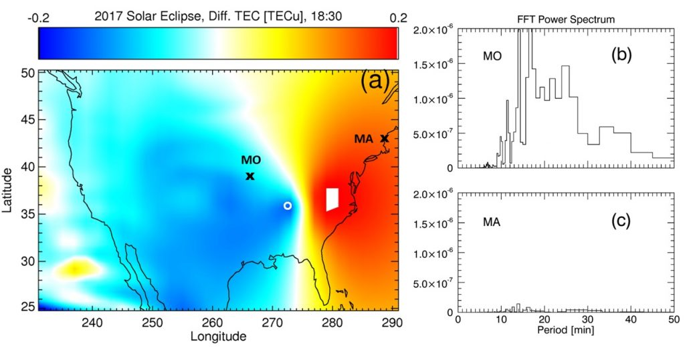

Research

Historical Solar X-ray Irradiance measured by satellites
[Lin et al., JGR Space Physics, 2016]
Solar-Terrestrial Interactions & Space Weather 日地關係與太空天氣
The Sun is the most important star. For us, that is. Life on Earth depends on it to rise every day. The terrestrial atmosphere shields us from its harmful X-ray and UV radiation, which creates the ionized part of atmosphere – ionosphere. The ionosphere impacts our satellite communication. The thermosphere, the neutral part of upper atmosphere, is the hottest region of our atmosphere. Two species there play the key role in balancing the absorbed solar energy – CO2 and NO.

Small-scale and high-frequency gravity waves modeled with high resolutions
[Lin et al., JGR Space Physics, 2017]
High-Resolution Global Modeling 高精度全球模擬
An accurate estimate of the state of the upper atmosphere is the key to safe space, aerospace, and ground operations. Satellites need to maintain their orbits. Ground stations need to point antennas to the right directions. Pilots need to have the right altitudes. Power grids need to remain operations or switch to safe mode during geomagnetic storms. Modeling of space environment with high resolution, short time step, and high precision ensures better and seamless life on Earth.
Acoustic-Gravity Waves 大氣重力波
Perturbations caused by geophysical and anthropogenic events on the ground have been observed to propagate upward and impact the upper atmosphere. Clear wave structures have been observed with earthquakes, volcanic events, tsunamis, and tropospheric systems. Even during solar eclipses!

GNSS-observed gravity waves by solar eclipse
[Zhang et al., Geophysical Research Letters, 2017]

Solar eclipse induced gravity waves with periodicities reproduced by a global model
[Lin et al., Geophysical Research Letters, 2018]